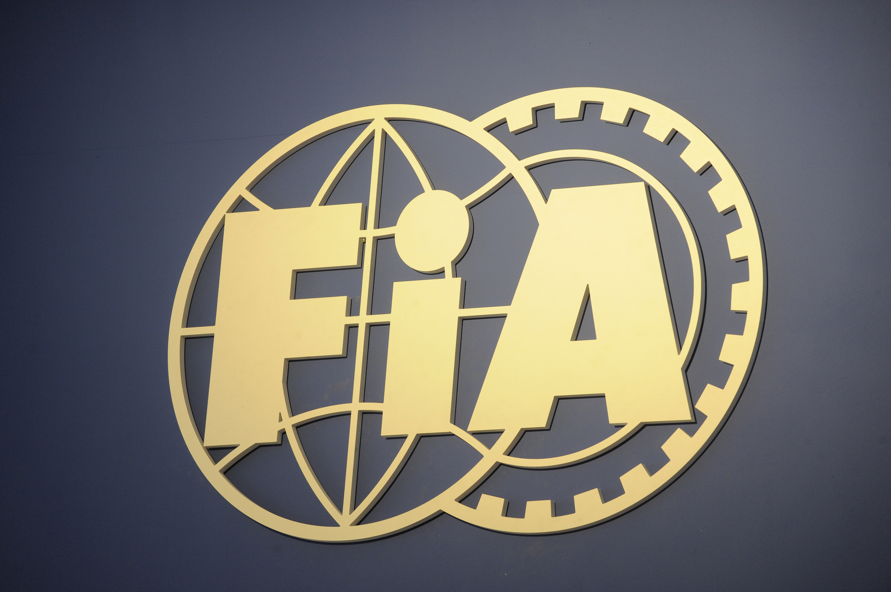
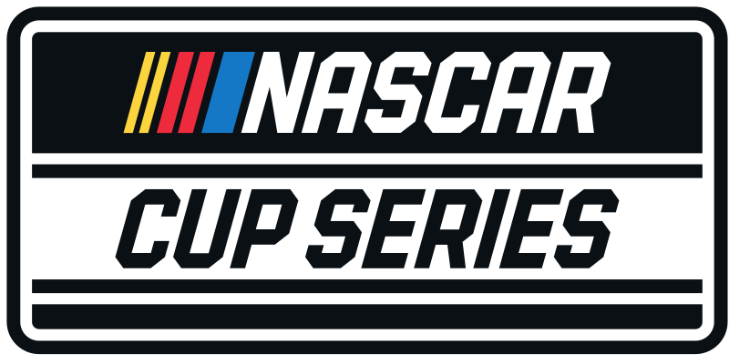
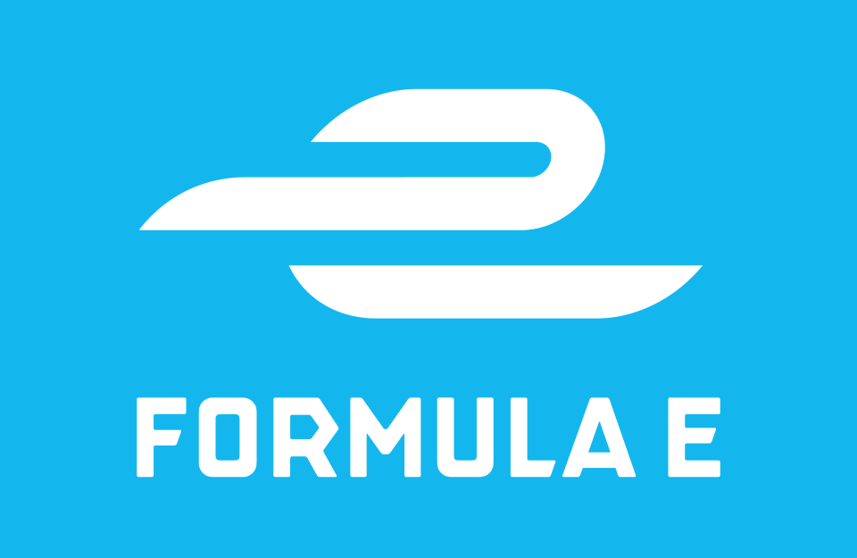

A FIA (Fédération Internationale de l'Automobile) é a organização mundial que rege os desportos motorizados e promove a segurança e a sustentabilidade na mobilidade.
Fundada em 1904, a FIA coordena uma vasta gama de competições automobilísticas, incluindo a Fórmula 1, o Campeonato Mundial de Ralis (WRC) e o Campeonato Mundial de
Endurance (WEC). Além da sua função esportiva, a FIA trabalha em estreita colaboração com governos e outras entidades para melhorar as políticas de trânsito e
segurança rodoviária, focando se em áreas como a redução de acidentes e a promoção de veículos ecológicos. A sede da FIA está localizada em Paris, França, e a
organização é composta por clubes automobilísticos de mais de 140 países. Com um compromisso contínuo com a inovação e o desenvolvimento sustentável, a
FIA desempenha um papel crucial tanto no desporto automóvel quanto na mobilidade global.
A MotoGP é a categoria principal do Campeonato Mundial de Motovelocidade, organizado pela Fédération Internationale de Motocyclisme (FIM). Estabelecida em 1949,
a MotoGP representa o auge das corridas de motocicletas, reunindo os melhores pilotos e as mais avançadas tecnologias em duas rodas. A competição é conhecida pelas
disputas emocionantes em pistas ao redor do mundo, desafiando a habilidade e a coragem dos pilotos a velocidades superiores a 350 km/h. Cada temporada é composta
por uma série de Grandes Prémios, realizados em diversos países, onde fabricantes como Yamaha, Honda, Ducati, Suzuki, KTM e Aprilia competem pelo título mundial.
Além de ser um espetáculo de adrenalina e perícia, o MotoGP também é um laboratório de inovação tecnológica, influenciando diretamente o desenvolvimento de motas
comerciais. Com uma crescente base de fãs globais, o MotoGP continua a ser um dos desportos motorizados mais emocionantes e seguidos do mundo.

A NASCAR (National Association for Stock Car Auto Racing) é uma das principais organizações de automobilismo dos Estados Unidos, fundada em 1948 por Bill France Sr.
Conhecida pelas corridas emocionantes em pistas ovais e circuitos mistos, a NASCAR é particularmente popular pelas suas séries emblemáticas, como a NASCAR Cup
Series, a Xfinity Series e a Truck Series. Cada temporada apresenta uma série de eventos em que pilotos competem em carros de stock altamente modificados, atingindo
velocidades impressionantes e proporcionando disputas intensas e imprevisíveis. As corridas da NASCAR são marcadas pela proximidade entre os carros e pela estratégia
de pit stops e gestão de pneus, exigindo habilidade e precisão dos pilotos e das equipas. Com uma base de fãs apaixonados e um forte impacto cultural,
especialmente no sul dos Estados Unidos, a NASCAR continua a ser um pilar do desporto motorizado americano e uma vitrine de engenharia automotiva e competição
acirrada.

A Fórmula E é um campeonato mundial de automobilismo totalmente elétrico, organizado pela Fédération Internationale de l'Automobile (FIA). Lançado em 2014, a
Fórmula E representa uma inovação significativa no desporto motorizado, destacando-se pela promoção da sustentabilidade e da tecnologia limpa. As corridas,
conhecidas como ePrix, ocorrem em circuitos urbanos em algumas das cidades mais icônicas do mundo, como Nova Iorque, Paris e Hong Kong. Com a participação de
fabricantes de renome, como Audi, BMW, Mercedes-Benz e Porsche, a Fórmula E tornou-se um campo de testes vital para a inovação e desenvolvimento de veículos
elétricos. A competição é caracterizada por um formato dinâmico que inclui elementos únicos, como o FanBoost e o Attack Mode, proporcionando uma experiência
interativa e emocionante para os fãs. Além de promover a mobilidade elétrica, a Fórmula E desempenha um papel crucial na conscientização sobre a necessidade de
soluções de transporte sustentável para o futuro.